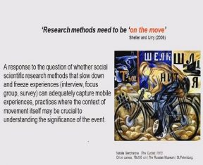

The use of mobile methods has been an important component of the cycle BOOM study as described in previous blog posts. On 11 May 2016, cycle BOOM researchers, Tim Jones and Justin Spinney, hosted a workshop at Oxford Brookes University on ‘Velomobile Methods: Investigation, Interrogation Interpretation’. This was an opportunity to bring together an audience interested in researching with cycle users to discuss the philosophical underpinnings and practical challenges of a velomobile approach.
I kicked off the day by giving a brief overview of the rationale behind the turn towards mobile methods and also charting the work of early purveyors of the approach (including our very own Justin Spinney!). I explained that my own initial engagement with velomobile methods was back in 2008 as part of mixed-methods research, notably the EPSRC Understanding Walking & Cycling (UWAC) study which helped to inform the approach we used for the cycle BOOM project. For UWAC, we attempted to interview riders while they made a typical journey by cycle (aka ‘ride-along’). This was challenging not least because of the difficulty riding two-abreast on busy roads while trying to make conversation amidst traffic noise. Inevitably, conversations were broken by the ebb and flow of cycling in traffic resorting in ‘grabbed discussion’ with the participant on how the ride was performed and accomplished. For cycle BOOM, we adopted a different approach where we observed and videoed riders while they made their journey and then conducted a post-ride interview with them using the video as a tool to enable them to talk about their ride – the so-called video elicitation interview (VEI). Despite the different challenges, both approaches provided the opportunity for researchers to immerse themselves in the lifeworld of their participant and to try to understand their rationales and experience of cycling in British cities. That action cameras are now more affordable and adaptable means that the video-elicitation-interview method is more appealing than ever. Participant narratives can be linked back to the video segments as participants watch and ‘make sense’ of their ride e.g. “I made that manoeuvre because…”; “Riding through this place makes me feel…”. Using video can help make a compelling case to policy makers on what needs to be done to support and increase participation in urban cycling by – short of them physically riding and experiencing the same route – getting them close to the cycling experience and ‘putting them in the shoes’ of the participant.
Expanding on this theme, Justin introduced how he first used velomobile methods for his PhD (on cycling in London) and explained why he used video elicitation – because it seemed the obvious way of ‘capturing’ the experience of cycling; was safer in the context of cycling in London; and because he wanted to try not to disrupt the natural flow of journey making. Justin charted some of the underpinnings behind mobile methods and in particular the sensory turn to try to understand the embodied experience of cycling (i.e. what sensations cycling produces) and growing interest in how journeys are produced and accomplished rather than simply focusing on the brute facts of movement between point A and point B. Reflecting on the critiques of mobile methods, Justin argued, despite video being a reduction of the actual experience, it can ‘ignite emotions and senses’ and is arguably more powerful than the written word in conveying the experience of cycling to policy makers.
Justin Spinney (Cardiff)
The audience was then treated to four excellent talks on how velomobile methods has been employed. During the remainder of the morning, Cosmin Popan (Lancaster University) in his presentation, ‘Representing cycling sensescapes and sociabilities with mobile methods‘, discussed his doctoral research which investigated the possibilities for everyday urban cycling to replace automobility. Cosmin has developed methodologies that use utopian imaginary to envision the functioning of mobile societies freed from the domination of the ‘automobility system’, where cycling as a normal, everyday means of moving around the city can flourish. This includes ‘ride alongs’ and video to investigate how cyclists’ senses and sociabilities could be re-articulated within this utopia but also an autoethnography to reflect upon and render his own sensory tactics as a cyclist. Gabriele Schliwa (The School of Environment, Education and Development (SEED), University of Manchester) in her presentation, ‘Crowdsensing, citizen engagement and the smart city: Assessing the ability of cycling apps to inform smart infrastructure planning‘, focused on the potential of cycling apps to identify citizens’ needs remotely by testing and comparing two different types of participatory methods, ranging from passive crowdsensing (via StravaMetro, a service based on Strava Cycling app data) to active extreme citizen science (via “Comob” which enables participants to engage as extreme citizen scientists and active sensors). These tools offer the potential too for deep analysis and understanding of real-world cycling (and pedestrian) route preferences. Gabi sparked debate concerning the integration of citizens in smart city design by raising critical questions about representation, need identification, as well as informed consent of digital data use, along with its implications for urban infrastructure planning and governance.
Experimental workshop: Rounding off the morning there was time for some hands-on experimentation with some of the Apps and equipment used by researchers and for discussion around some of the points raised by the speakers particularly around the challenge of capturing and representing ‘velomobile soundscapes’ much the same way as the more developed ‘soundwalking’.
Cosmin Popan (Lancaster)
Gabriele Schliwa (Manchester)
After lunch, the afternoon session kicked-off with Graham Berridge’s (School of Hospitality and Tourism, University of Surrey) talk, ‘Issues and challenges in developing and maintaining multi-sited experiential ethnographic research: a study of the meaning and experience of participation in Cyclosportives‘ – cyclo-sportives are a growing phenomenon in the UK and are essentially non-competitive, mass start cycling events that offer a ‘challenge’ to the participant based on terrain, time and distance. Using experiential ethnography Graham explained how he engaged in interviews and conversations with over 100 participants across 37 cyclo-sportive events to reveal the key experiences and the lived multi-dimensional nature of those riding cyclo-sportive events. Finally, Denver Nixon (Transport Studies Unit, University of Oxford) presented his research, ‘When the Landscape Interviews the Cyclist’. Denver introduced the value of self-administer commute narrative recordings to investigate the ways cycling (and walking and driving) shape commuters’ knowledge of their social and physical environments. He explained how he was able to get participants in Vancouver (Canada) to utter their stream-of-consciousness into a lapel microphone linked to a digital audio recorder and GPS during commutes. While this enabled him to produce valuable in situ, ‘un-self-censored’ accounts of the experience of the journey, Denver highlighted the challenge he faced in analysing seemingly “disorganized” data – something we are only too familiar with on the cycle BOOM study!
Graham Berridge (Surrey)
Denver Nixon (Oxford)
Typical of these types of workshop events that generate so much thinking and discussion, we ran out of time but we managed to carry this over to a local hostelry. Justin and I both feel that this was a really useful event and that it helped us to think through the challenges of doing velomobile research and potential avenues for further exploration. And judging by the feedback we received from speakers and participants, the feeling was mutual. We are now thinking about how we can take the outcomes of the event further. We realise that there are current and potential velomobile researchers out there who might also benefit from the ongoing discussion and the experience of those that have gone before them and we wish to support that endeavour.
A full video recording of the livestream of the event is available here.
Comments from the Twittersphere are available at #velomobilemethods
cycle BOOM would like to acknowledge the support of the Research Councils UK Lifelong Health and Wellbeing Programme that enabled us to host this event.

{kind=link}
Leave a Reply